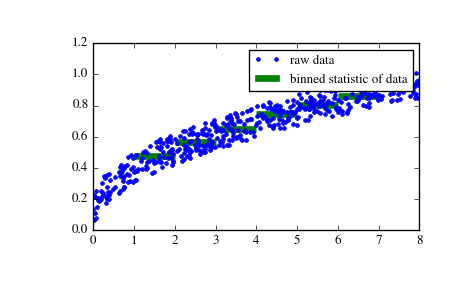
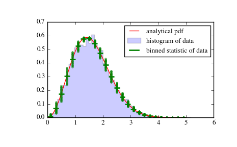

scipy.stats.binned_statistic¶
- scipy.stats.binned_statistic(x, values, statistic='mean', bins=10, range=None)[source]¶
Compute a binned statistic for a set of data.
This is a generalization of a histogram function. A histogram divides the space into bins, and returns the count of the number of points in each bin. This function allows the computation of the sum, mean, median, or other statistic of the values within each bin.
Parameters: x : array_like
A sequence of values to be binned.
values : array_like
The values on which the statistic will be computed. This must be the same shape as x.
statistic : string or callable, optional
The statistic to compute (default is ‘mean’). The following statistics are available:
- ‘mean’ : compute the mean of values for points within each bin. Empty bins will be represented by NaN.
- ‘median’ : compute the median of values for points within each bin. Empty bins will be represented by NaN.
- ‘count’ : compute the count of points within each bin. This is identical to an unweighted histogram. values array is not referenced.
- ‘sum’ : compute the sum of values for points within each bin. This is identical to a weighted histogram.
- function : a user-defined function which takes a 1D array of values, and outputs a single numerical statistic. This function will be called on the values in each bin. Empty bins will be represented by function([]), or NaN if this returns an error.
bins : int or sequence of scalars, optional
If bins is an int, it defines the number of equal-width bins in the given range (10 by default). If bins is a sequence, it defines the bin edges, including the rightmost edge, allowing for non-uniform bin widths. Values in x that are smaller than lowest bin edge are assigned to bin number 0, values beyond the highest bin are assigned to bins[-1].
range : (float, float) or [(float, float)], optional
The lower and upper range of the bins. If not provided, range is simply (x.min(), x.max()). Values outside the range are ignored.
Returns: statistic : array
The values of the selected statistic in each bin.
bin_edges : array of dtype float
Return the bin edges (length(statistic)+1).
binnumber : 1-D ndarray of ints
This assigns to each observation an integer that represents the bin in which this observation falls. Array has the same length as values.
Notes
All but the last (righthand-most) bin is half-open. In other words, if bins is [1, 2, 3, 4], then the first bin is [1, 2) (including 1, but excluding 2) and the second [2, 3). The last bin, however, is [3, 4], which includes 4.
New in version 0.11.0.
Examples
>>> from scipy import stats >>> import matplotlib.pyplot as plt
First a basic example:
>>> stats.binned_statistic([1, 2, 1, 2, 4], np.arange(5), statistic='mean', ... bins=3) (array([ 1., 2., 4.]), array([ 1., 2., 3., 4.]), array([1, 2, 1, 2, 3]))
As a second example, we now generate some random data of sailing boat speed as a function of wind speed, and then determine how fast our boat is for certain wind speeds:
>>> windspeed = 8 * np.random.rand(500) >>> boatspeed = .3 * windspeed**.5 + .2 * np.random.rand(500) >>> bin_means, bin_edges, binnumber = stats.binned_statistic(windspeed, ... boatspeed, statistic='median', bins=[1,2,3,4,5,6,7]) >>> plt.figure() >>> plt.plot(windspeed, boatspeed, 'b.', label='raw data') >>> plt.hlines(bin_means, bin_edges[:-1], bin_edges[1:], colors='g', lw=5, ... label='binned statistic of data') >>> plt.legend()
Now we can use binnumber to select all datapoints with a windspeed below 1:
>>> low_boatspeed = boatspeed[binnumber == 0]
As a final example, we will use bin_edges and binnumber to make a plot of a distribution that shows the mean and distribution around that mean per bin, on top of a regular histogram and the probability distribution function:
>>> x = np.linspace(0, 5, num=500) >>> x_pdf = stats.maxwell.pdf(x) >>> samples = stats.maxwell.rvs(size=10000)
>>> bin_means, bin_edges, binnumber = stats.binned_statistic(x, x_pdf, ... statistic='mean', bins=25) >>> bin_width = (bin_edges[1] - bin_edges[0]) >>> bin_centers = bin_edges[1:] - bin_width/2
>>> plt.figure() >>> plt.hist(samples, bins=50, normed=True, histtype='stepfilled', alpha=0.2, ... label='histogram of data') >>> plt.plot(x, x_pdf, 'r-', label='analytical pdf') >>> plt.hlines(bin_means, bin_edges[:-1], bin_edges[1:], colors='g', lw=2, ... label='binned statistic of data') >>> plt.plot((binnumber - 0.5) * bin_width, x_pdf, 'g.', alpha=0.5) >>> plt.legend(fontsize=10) >>> plt.show()
